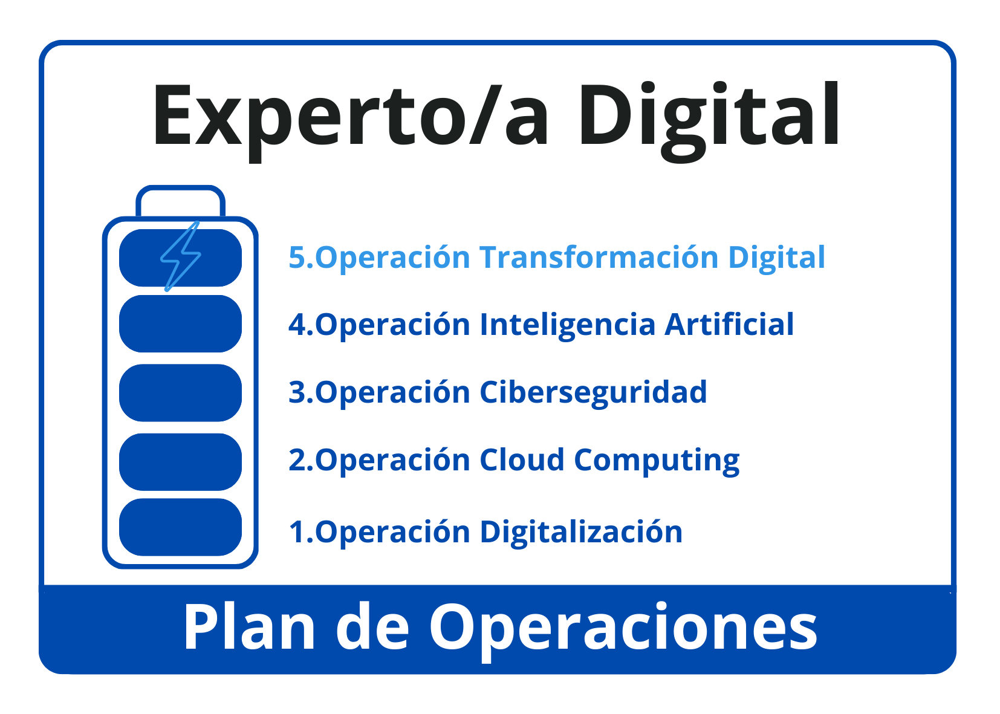

En esta última operación del módulo de digitalización para Ciclo Superior vamos a trabajar conceptos vinculados a la transformación digital de las empresas.
La transformación digital de una pyme no es un proceso aislado, sino un camino estructurado que requiere combinar estrategia, análisis y acción. Para entenderlo mejor, vamos a dividir esta operación en tres apartados que se complementan entre sí.
- En primer lugar, el apartado Empresa y Estrategia, nos permite definir con claridad qué quiere la empresa: aquí se establecen los objetivos estratégicos SMART, se analizan las áreas clave del negocio y se plantea un diagnóstico inicial que marca el punto de partida y la dirección deseada. Además, para que la estrategia no se quede solo en intenciones, es fundamental aclarar quién hace qué en el proceso, y para ello utilizamos la Matriz RACI.
- En segundo lugar, el apartado Digitalització de la empresa, se centra en identificar qué se puede mejorar con la tecnología. En esta fase revisamos los procesos para detectar oportunidades de digitalización y anticipar posibles dificultades. También analizamos la decisión entre software libre y software propietario, e introducimos una actividad práctica de cloud computing, que nos permite comprender cómo la nube se ha convertido en un pilar fundamental de la digitalización en las pymes.
- Finalmente, el apartado Transformación digital, se ocupa de qué significa realmente transformar digitalmente una empresa, cómo se conecta con la estrategia de digitalización nacional y qué implicaciones tiene para las pymes. La herramienta clave que introducimos aquí es la Matriz de Impacto–Esfuerzo, que nos ayuda a valorar y priorizar las posibles acciones en función de su beneficio y de los recursos necesarios. Este apartado anticipa el reto completo de la transformación, que se desarrollará en tres fases: diagnóstico estratégico, habilitación de la digitalización y plan de acción y seguimiento.
De este modo, pasamos de la estrategia a la digitalización y, finalmente, a la transformación digital real, logrando que los objetivos definidos se conviertan en resultados medibles y sostenibles para la pyme.

Es importante que todas las actividades y documentación vinculadas a esta operación estén correctamente registradas en nuestro archivo LOG, ya que nos servirá como herramienta para recopilar el trabajo realizado, saber en qué fase nos encontramos, tareas pendientes y finalizadas, así como para reflexionar sobre lo aprendido y tener un banco de recursos útil y actualizado.